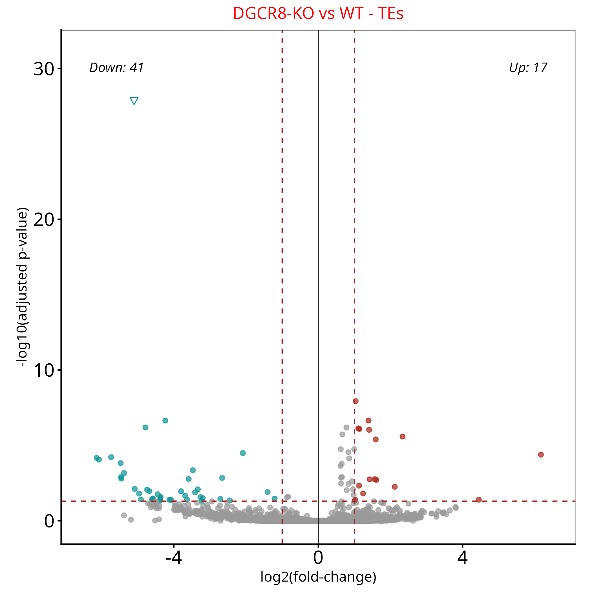
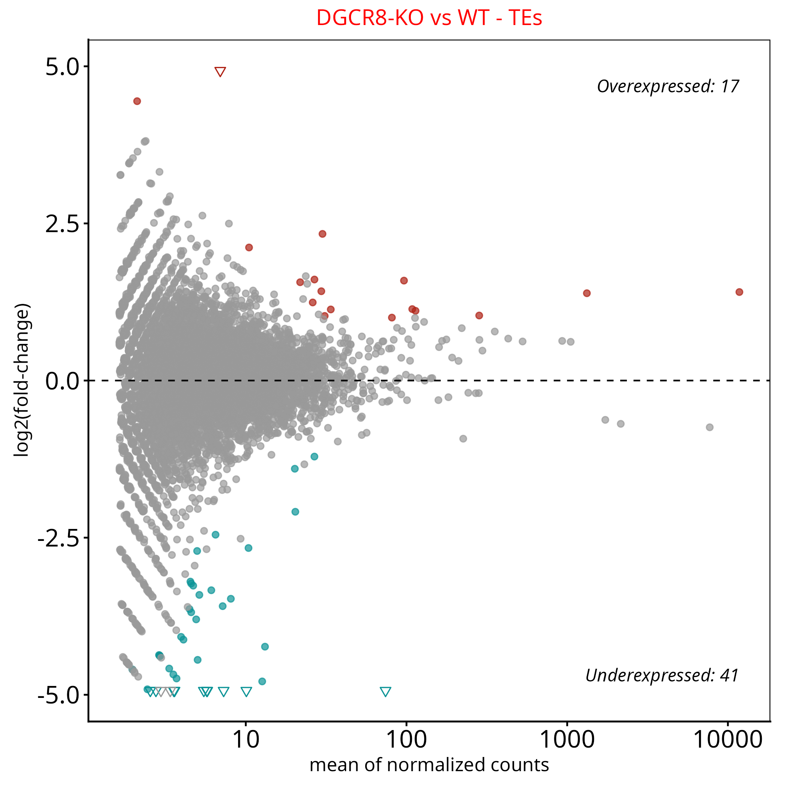
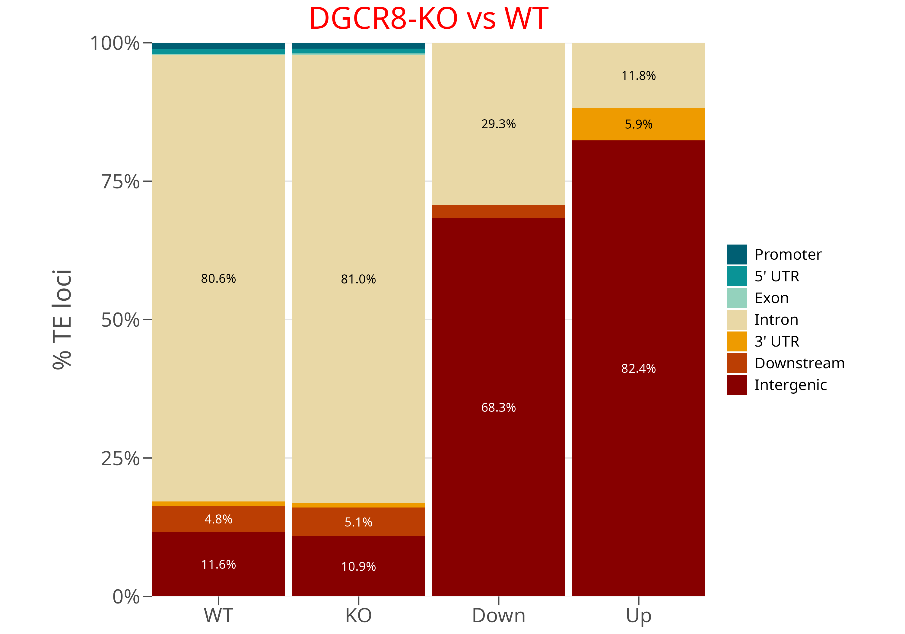
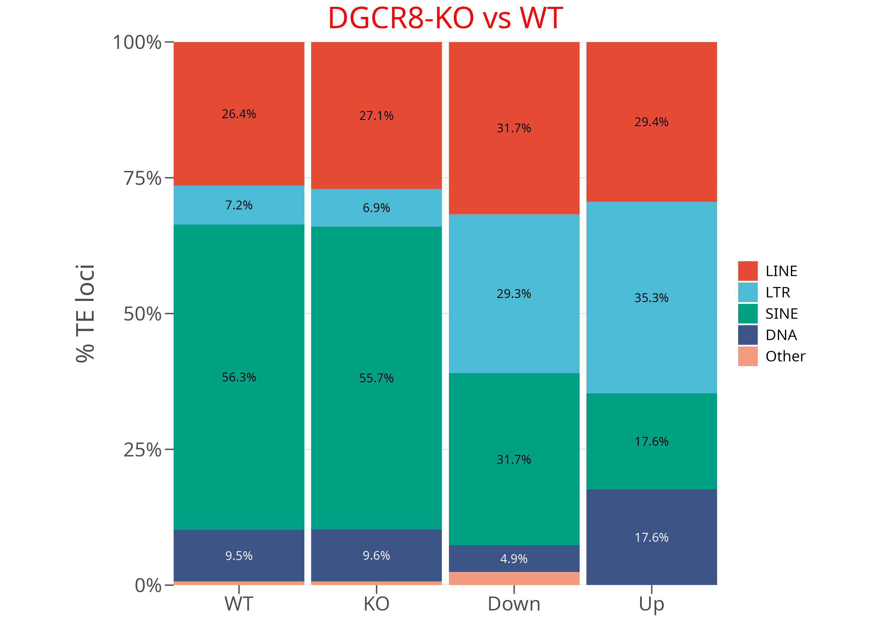
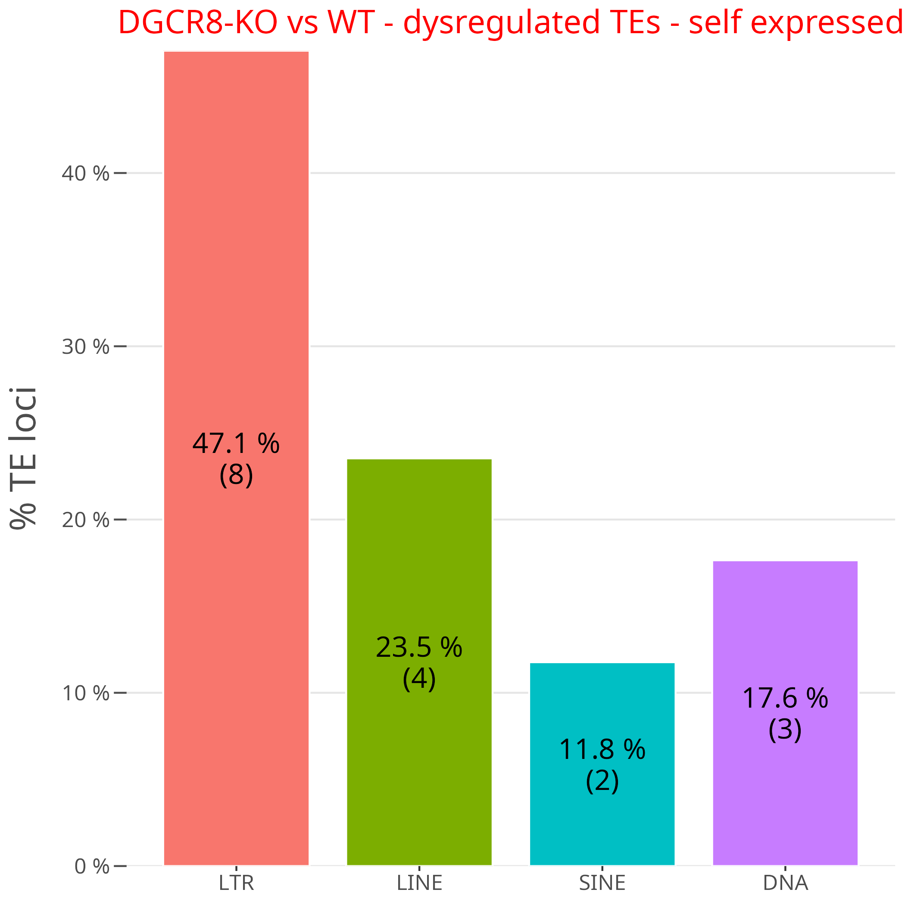
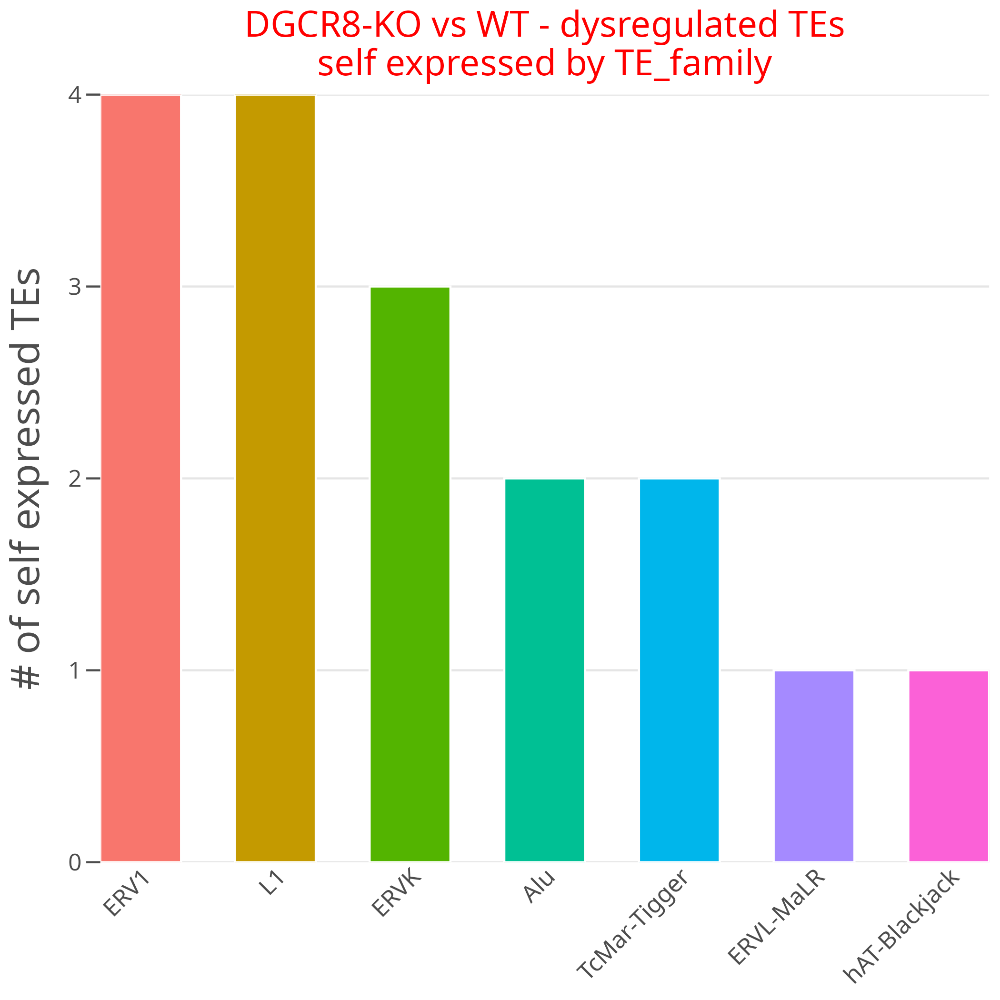
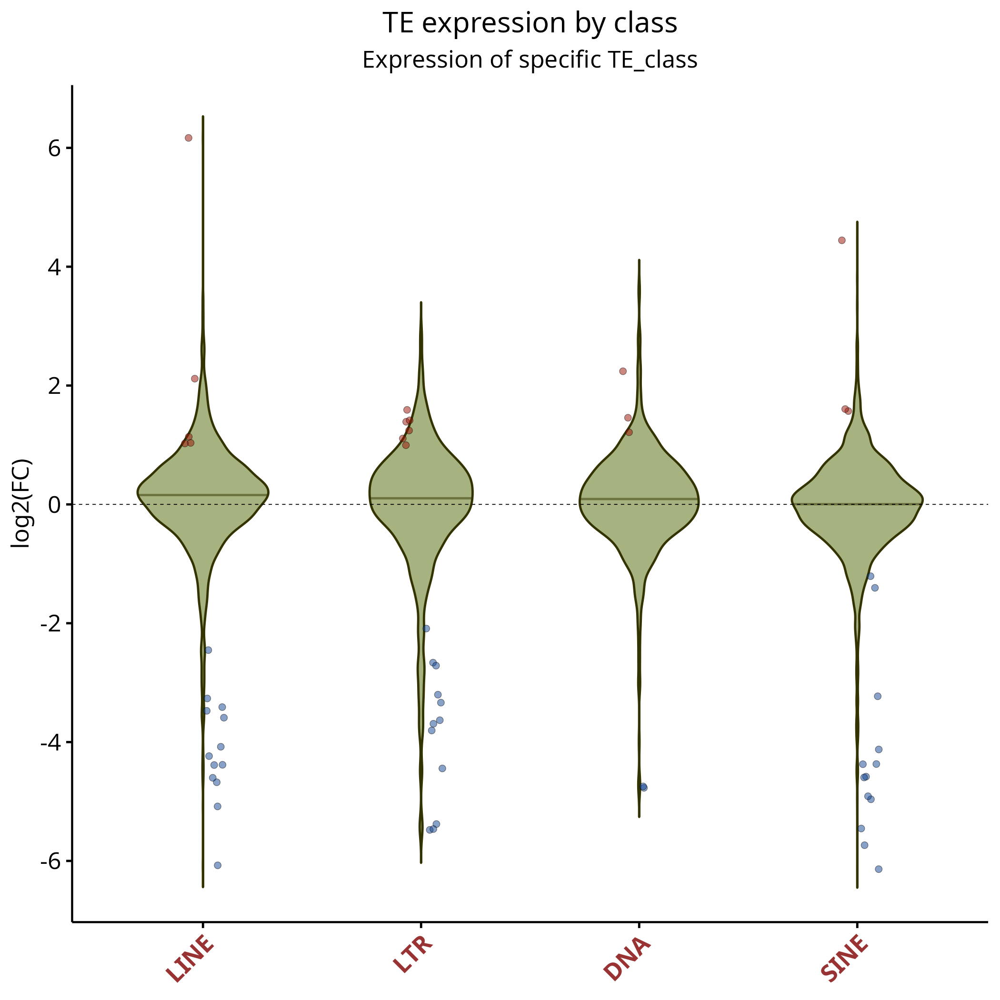
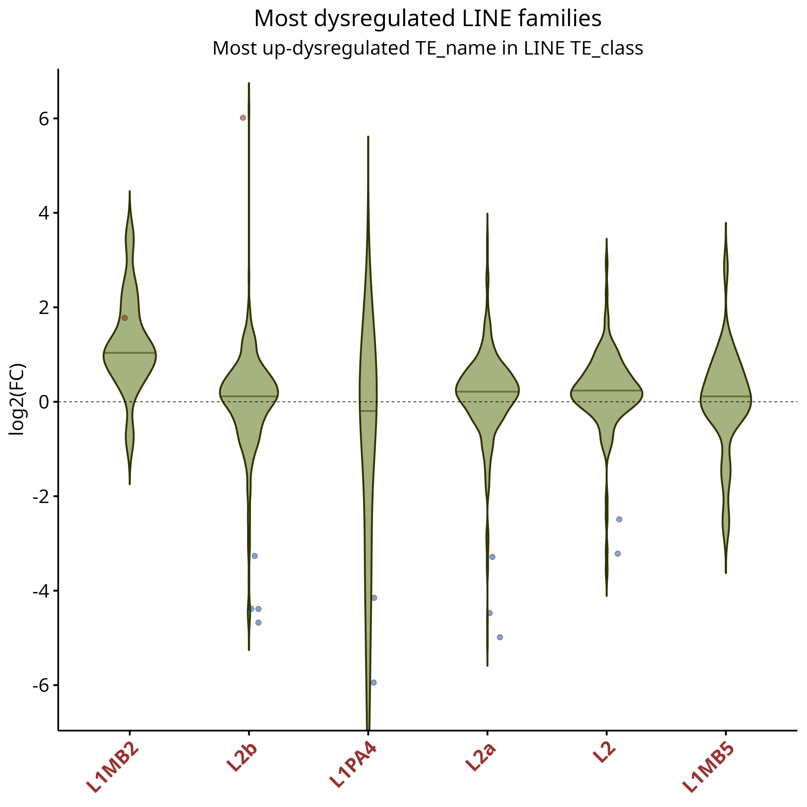
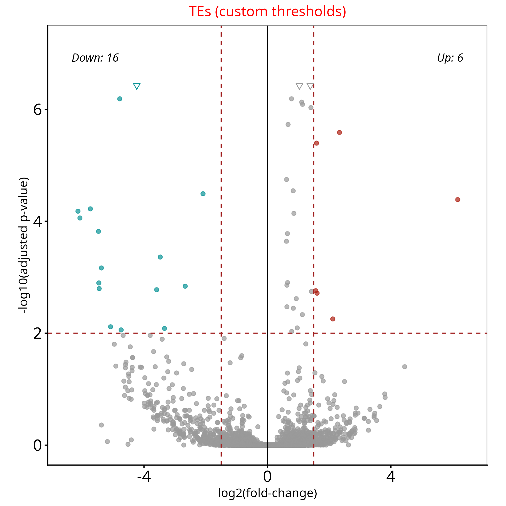

Analyzing transposable element expression with TExpress
Guillermo Peris
06/24/2026
Source:vignettes/TExpress.Rmd
TExpress.RmdIntroduction
TExpress is an R package for the downstream analysis of transposable element (TE) expression from quantification tools such as TElocal (part of the TEtranscripts suite). In addition to performing differential expression analysis with DESeq2, TExpress annotates TEs with respect to genomic features and classifies their expression as originating either from the TE’s own promoter (self-expressed) or from an external promoter, typically a nearby gene (gene-dependent).
The analysis is organized as a three-stage pipeline, where each stage consumes and extends a single result list:
-
TE_DEA()— reads the metadata and count tables, runs DESeq2, and returns a list withres.TEs,TE.count,gene.count, andmetadata. -
annotate_TE_regions()— adds genomic-context annotation (Promoter / Exon / Intron / …) relative to a gene GTF. -
classify_TE_transcription()— labels each TE as self-expressed or gene-dependent.
Each stage also writes publication-ready figures and result tables to disk. The figures shown throughout this vignette were generated by running the pipeline on the example dataset described below.

TExpress pipeline overview: the output of each stage is the input of the next.
Two conventions to know
The colon-separated TE identifier
TE features are identified by a colon-separated, four-level hierarchy used as the row name of every TE table:
TE_element : TE_name : TE_family : TE_class
e.g. L1PA2_dup501 : L1PA2 : L1 : LINEThe presence of : in a feature’s row name is how
TExpress distinguishes TEs from genes throughout the
package, so this format must be preserved.
The Control / Treat metadata
The metadata table must contain a Condition column with
exactly the values "Control" and "Treat"
(case-sensitive). TExpress uses Control as the
reference level, so every reported contrast is Treat
vs. Control. A minimal metadata file is a tab-separated table
with four columns: File, Sample,
Group, and Condition.
Standard workflow
The chunks below are not evaluated when the vignette is built (they require the Bioconductor stack and a ~90 MB download), but they show a complete, runnable analysis. The figures accompanying each step are real outputs produced by these exact calls on the example chr22 dataset.
Getting example data
downloadTestData() fetches a small chr22 example dataset
(gene GTF, TE GTF, and count tables) and returns the paths needed by the
pipeline.
my.data <- downloadTestData()
str(my.data)
#> List of 4
#> $ metafile : chr ".../data.csv"
#> $ folder : chr "..."
#> $ gtf.gene.file: chr ".../Homo_sapiens.GRCh38.115_chr22.gtf"
#> $ gtf.TE.file : chr ".../hg38_rmsk_TE_chr22.gtf"Step 1: Differential expression analysis
TE_DEA() reads the metadata and counts, imports the TE
GTF, and runs DESeq2, writing volcano/MA plots and result tables to
output.
TE_results <- TE_DEA(
metafile = my.data$metafile,
folder = my.data$folder,
gtf.TE.file = my.data$gtf.TE.file,
output = "results",
maxpadj = 0.05,
minlfc = 1,
device = c("png", "svg"),
plot.title = "DGCR8-KO vs WT"
)The returned object is a list carrying the result data frames and
counts that the following stages extend. For the TE results,
TE_DEA() writes a volcano plot and an MA plot (a matching
pair is also produced for genes):


Step 1 — differential expression of TEs: volcano plot (left) and MA plot (right). Up- and down-regulated TEs are highlighted.
Step 2: Genomic-context annotation
annotate_TE_regions() assigns each TE to a genomic
region (Promoter, 5’ UTR, Exon, Intron, 3’ UTR, Downstream, or
Intergenic) relative to the supplied gene annotation, and produces
stacked bar plots of the region and TE-class distributions.
TE_results <- annotate_TE_regions(
TE_results = TE_results,
gtf.genes.file = my.data$gtf.gene.file,
output_folder = "results",
device = c("png", "svg"),
minCounts = 10,
plot.title = "DGCR8-KO vs WT"
)The stacked bar plots compare, side by side, the genomic-region and TE-class composition of the TEs expressed in each condition and of the up/down-regulated sets:


Step 2 — distribution of TEs across genomic regions (left) and TE classes (right) for control, treatment, down- and up-regulated groups.
Step 3: Transcriptional classification
Finally, classify_TE_transcription() labels expressed
TEs as self-expressed (transcribed from their own internal
promoter) or gene-dependent (transcribed as part of host-gene
transcription). The save argument selects which set of TEs
to analyze: "all", "up", "down",
or "dys" (up + down).
TE_results <- classify_TE_transcription(
TE_results = TE_results,
output_folder = "results",
plot.title = "DGCR8-KO vs WT",
save = "dys"
)Among others, this step produces a bar plot of the self-expressed fraction per TE class and a bar plot of the TE families contributing most self-expressed loci:


Step 3 — self-expressed TEs broken down by TE class (left) and the families contributing the most self-expressed loci (right).
Beyond the pipeline: standalone plots
Several plotting functions can be called directly on a result data
frame, outside the three-stage pipeline. This is useful for focusing on
a particular set of TEs or for re-plotting with different thresholds.
All of them operate on TE_results$res.TEs (the TE results
data frame, which carries the log2FoldChange,
padj, and the TE_element /
TE_name / TE_family / TE_class
columns).
Violin plots for selected TEs
violinPlotByTEList() draws one violin per element of a
TE list that all sit at the same level of the hierarchy — for example
the four main TE classes — showing the distribution of log2 fold
changes, with significantly up- and down-regulated loci overlaid as
points:
violinPlotByTEList(
res.TEs = TE_results$res.TEs,
TE_list = c("LINE", "SINE", "LTR", "DNA"),
minlfc = 1,
maxpadj = 0.05,
plot.title = "TE expression by class",
output = "results/TEs_DEA"
)
violinPlotByTEList(): log2 fold-change distribution for each TE class.
violinPlotByTEtype() zooms into a single TE type and
shows the most dysregulated members at a finer level (here, the top LINE
families by name):
violinPlotByTEtype(
res.TEs = TE_results$res.TEs,
TE_type = "LINE",
specific_type = "TE_name",
nTop = 6,
plot.title = "Most dysregulated LINE families",
output = "results/TEs_DEA"
)
violinPlotByTEtype(): the most dysregulated LINE elements, one violin per name.
Re-using the pipeline plot functions directly
The figures shown in the standard workflow are produced internally by
exported functions you can also call yourself:
graphTE_DEA() (volcano + MA), graphTEregion()
(region / TE-class stacked bars) and graph_classify_TE()
(classification bar plots). Calling them directly lets you re-plot the
same results with different significance thresholds, output formats or
titles. For instance, to redraw the TE volcano/MA pair with stricter
cutoffs:
graphTE_DEA(
res = TE_results$res.TEs,
maxpadj = 0.01,
minlfc = 1.5,
device = "png",
output_folder = "results/custom",
plot.title = "TEs (custom thresholds)"
)
graphTE_DEA() called directly with stricter thresholds (padj < 0.01, |log2FC| > 1.5).
Any of these functions can be saved in several formats at once via
the device argument
(e.g. device = c("png", "svg")), and the low-level helper
printDevice() is exported for saving an arbitrary
ggplot object to multiple formats.
Donut charts (optional)
For a per-class donut chart of the expression-type breakdown,
create_pie_donut() is also available. It depends on the webr package,
which is no longer maintained and emits deprecation warnings, so it is
not run in this vignette; see ?create_pie_donut for
usage.
Restricting the gene annotation (optional)
You should be aware that all reads overlapping gene feature annotation and TE annotation in the same strand are assigned to genes by TElocal. If you are interested in restricting you gene annotation to only some features (for example, protein_coding and lncRNA) you can use TExpress function filter_GTF:
filter_GTF(
"Homo_sapiens.GRCh38.115.gtf",
features = c("protein_coding"),
format.in = "gtf",
format.out = "gtf",
suffix = "filtered"
)Session information
sessionInfo()
#> R version 4.6.0 (2026-04-24)
#> Platform: x86_64-pc-linux-gnu
#> Running under: Ubuntu 24.04.4 LTS
#>
#> Matrix products: default
#> BLAS: /usr/lib/x86_64-linux-gnu/openblas-pthread/libblas.so.3
#> LAPACK: /usr/lib/x86_64-linux-gnu/openblas-pthread/libopenblasp-r0.3.26.so; LAPACK version 3.12.0
#>
#> locale:
#> [1] LC_CTYPE=C.UTF-8 LC_NUMERIC=C LC_TIME=C.UTF-8
#> [4] LC_COLLATE=C.UTF-8 LC_MONETARY=C.UTF-8 LC_MESSAGES=C.UTF-8
#> [7] LC_PAPER=C.UTF-8 LC_NAME=C LC_ADDRESS=C
#> [10] LC_TELEPHONE=C LC_MEASUREMENT=C.UTF-8 LC_IDENTIFICATION=C
#>
#> time zone: UTC
#> tzcode source: system (glibc)
#>
#> attached base packages:
#> [1] stats graphics grDevices utils datasets methods base
#>
#> loaded via a namespace (and not attached):
#> [1] digest_0.6.39 desc_1.4.3 R6_2.6.1 fastmap_1.2.0
#> [5] xfun_0.59 cachem_1.1.0 knitr_1.51 htmltools_0.5.9
#> [9] rmarkdown_2.31 lifecycle_1.0.5 cli_3.6.6 sass_0.4.10
#> [13] pkgdown_2.2.0 textshaping_1.0.5 jquerylib_0.1.4 systemfonts_1.3.2
#> [17] compiler_4.6.0 tools_4.6.0 ragg_1.5.2 bslib_0.11.0
#> [21] evaluate_1.0.5 yaml_2.3.12 otel_0.2.0 jsonlite_2.0.0
#> [25] rlang_1.2.0 fs_2.1.0 htmlwidgets_1.6.4